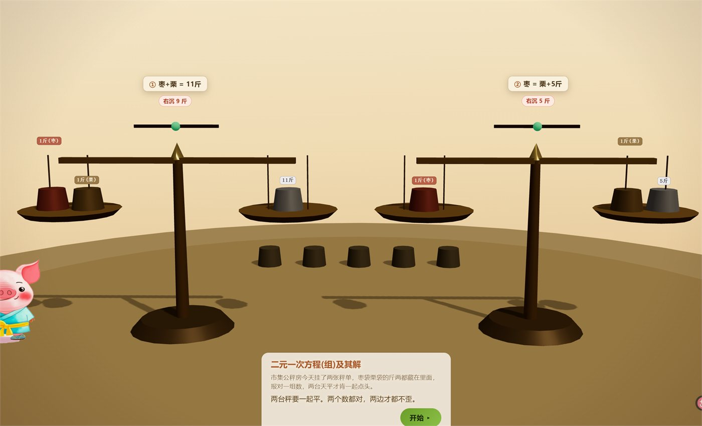
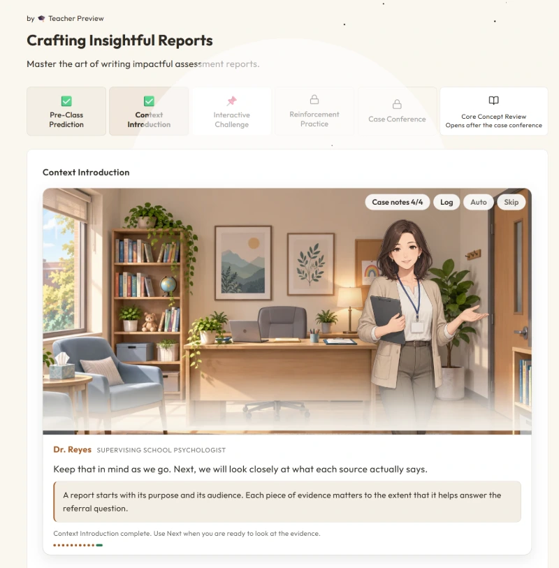

01
Boston Bilingual Pioneer Media Interactive Learning & Game-Based Education
Boston Bilingual Pioneer Media brings together seven learning-product directions spanning interactive 3D education, AI-supported courseware, and character-based learning experiences. My work focuses on game and interaction design, visual development, and translating educational goals into meaningful activities.

